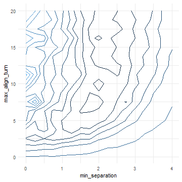

This example is using NetLogo Flocking model (Wilensky, 1998) to demonstrate single best-fit criterion evaluation.
Use full factor design experiment as in Categorical Criteria Example:
experiment <- nl_experiment(
model_file = "models/Sample Models/Biology/Flocking.nlogo",
setup_commands = c("setup", "repeat 100 [go]"),
iterations = 5,
param_values = list(
world_size = 50,
population = 80,
vision = 6,
min_separation = seq(from = 0, to = 4, by = 0.25),
max_align_turn = seq(from = 0, to = 20, by = 1.25)
),
mapping = c(
min_separation = "minimum-separation",
max_align_turn = "max-align-turn"),
step_measures = measures(
converged = "1 -
(standard-deviation [dx] of turtles +
standard-deviation [dy] of turtles) / 2",
mean_crowding =
"mean [count flockmates + 1] of turtles"
),
eval_criteria = criteria(
c_converged = mean(step$converged),
c_mcrowding = mean(step$mean_crowding)
),
repetitions = 10, # repeat simulations 10 times
random_seed = 1:10,
eval_aggregate_fun = mean # aggregate over repetitions
)result <- nl_run(experiment, parallel = TRUE)If our ideal mean crowding is around 8 and convergence is near 1 we can construct a function like this:
\[ value = \sqrt{(crowding - 8)^2 + 100 \times (converged - 1)^2} \]
dat <- nl_get_criteria_result(
result,
eval_value = sqrt((c_mcrowding - 8)^2 + 400*(c_converged - 1)^2)
)library(ggplot2)
ggplot(dat,
aes( x = min_separation, y = max_align_turn, fill = eval_value)) +
geom_tile() +
coord_fixed(4/20) +
theme_minimal() +
theme(legend.position="none")library(ggplot2)
ggplot( dat, aes(x = min_separation, y = max_align_turn, z = eval_value) ) +
stat_contour(bins = 11, aes(color = ..level..)) +
coord_fixed(4/20) + theme_minimal() + theme(legend.position="none")